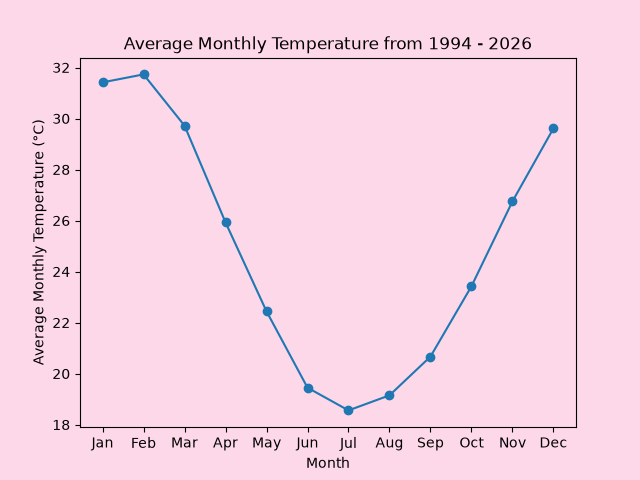
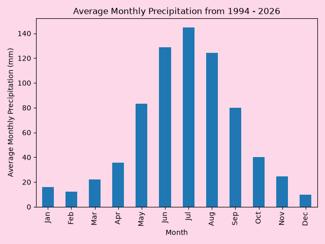

Of the six Nyoongar Calender seasons, 3 are the main focus for this app.
These are: Kambarang, Birak and Makuru


Pick a season to explore:
Kambarang
October to November
The season of wildflowers. Kambarang is a time of renewal and growth, when the land is covered in colorful blooms. The days are becoming warmer and drier
Kambarang activities to do on a budget:
Cycling around Perth: Matilda Bay, Kings Park, Coastal cycle paths, Lake Joondalup, Galup Reserve.
Elizabeth Quay: Enjoy the waterfront, public art, events, cafes and restaurants.
South Perth Foreshore: Perfect for a family picnic, walking the dog, or enjoying the views.
Wanneroo Botanical Gardens: Enjoy walking through the beautiful gardens.
Kings Park walks: Visit Poolgarla family area, Rio Tinto Naturescape, Fraser Ave Precinct for a picnic, walk through the trails in the Botanic Gardens, visit the May Driver Parkland with the dinosaur statues, and walk through the numerous trails in Kings Park.
Bold Park trail walks: The 1.7km Camel Lake Heritage Trail, the 5.1km Zamia Trail (hilly) with great lookout spots, the 1.1km Tuart Walk, and other small trails that go through the park.
Perry Lakes skate park: Perfect for all ages, skateboarding, biking, scootering, and is right next to Perry Lakes and Bold Park, perfect for walking.
Paid activities to do during Kambarang
Perth Zoo: Explore the diverse wildlife and exhibits, watch animal feedings and explore the gift shop at the end.
Daytrip to Rottnest Island: Using any of the three ferry services to travel to the island, and then bike, walk or bus through the island to it's numerous beaches. Be on the lookout for Quokkas, the purple Rottnest Daisies, and grab a bite from the Rottnest Bakery, General Store, Pub and all other places on the island.
Mini golf at Wembley Golf Course: Enjoy the mini golf course at Wembley, with a playground next door and a restaurant above to watch the kids play.
Wanneroo Botanical Gardens: They offer both mini golf and "glow golf" for playing at night.
Birak
December to January
The season of fire. Birak is a time of heat and dryness, where the Sea Breeze brings relief from the scorching sun. It's a time for outdoor activities and enjoying the natural beauty of the land.
Birak activities to do on a budget:
Beaches: Cottesloe Beach, Omeo Wreck, Mettam's Pool, Hillary's Boat Harbour, and more for swimmming, picnicing, and having fun with the family.
Kings Park walks: Visit Poolgarla family area, Rio Tinto Naturescape, Fraser Ave Precinct for a picnic, walk through the trails in the Botanic Gardens, visit the May Driver Parkland with the dinosaur statues, and walk through the numerous trails in Kings Park.
Go down to the Swan River: Go for a swim at any of the established swimming spots such as Matilda Bay, Point Walter and more.
Fremantle Markets: Visit the oldest market in Australia, open Fridays, Saturdays and Sundays, eat food and go shopping.
Local Swimming Pools: Have a look for local swimming pools in your area, such as Claremont Aquatic Centre, Bold Park Aquatic Centre, Fremantle Leisure Centre and more.
Visit Fremantle: Walk the streets of Perth's oldest suburbs, visit cafes, stores, the ferris wheel and more.
Paid activities to do during Birak
Adventure World: Enjoy thrilling rides and attractions for the whole family.
Daytrip to Rottnest Island: Using any of the three ferry services to travel to the island, and then bike, walk or bus through the island to it's numerous beaches. Be on the lookout for Quokkas, the purple Rottnest Daisies, and grab a bite from the Rottnest Bakery, General Store, Pub and all other places on the island.
Outback Splash: Enjoy waterslides and other fun water activities, with areas for all ages to enjoy. Play mini golf, get lost in their maze, and enjoy food and drink on site.
Perth Wildlife Encounters dolphin swim (Rockingham): Book a trip to swim with and watch dolphins play in the water.
AQWA: Located in Hillary's Boat Harbour, this marine park offers interactive exhibits and educational programs, with a touch pool, underwater tunnel and more.
Caversham Wildlife Park: Meet koalas, wombats, kangaroos, reptiles, farm animals and little penguins, and enjoy walking through the grounds.
Makuru
June to July
The cold and wet season. Makuru is a time of rain and cooler temperatures, where the land rejuvenates and the rivers flow. It is a time for indoor activities and enjoying the warmth of home.
Makuru activities to do on a budget:
Visit the Perth Cultural Centre: Explore museums, galleries, and libraries.
Scarborough Markets: Every Saturday evening are when the Scarborough Sunset Markets come alive in Makuru. Enjoy great food and shopping, and a wonderful view of the sea.
Maritime Museum: Free for kids under 15, enjoy looking at the exhibits and learning about maritime history.
Whale Watching - From the shore: Go to any beach and watch the waters for the whale migration.
Fremantle Markets: Visit the oldest market in Australia, open Fridays, Saturdays and Sundays, eat food and go shopping.
Walks in Perth Hills: Search up the best trails for you and your family, and enjoy the scenery.
Scarborough Beach whale playground: Let the kids play with a view.
Paid activities to do during Makuru
Scitech: Discover science through interactive exhibits and demonstrations, let the kids play, and enjoy time out of the rain.
WA Museum: Explore Perth's and Australia's history, and be on the lookout for special exhibitions.
Bounce: Visit any of the bounce locations in Perth for some fun for the kids.
Ice Skating: Visit one of the two ice rinks in Perth, hire skates, and have fun!
Cinema: Have a look at what your local cinema is showing.
Ten Pin Bowling: Take the family bowling and see who is the best!
Fremantle Prison: Take a guided tour and learn about the history of this former prison.